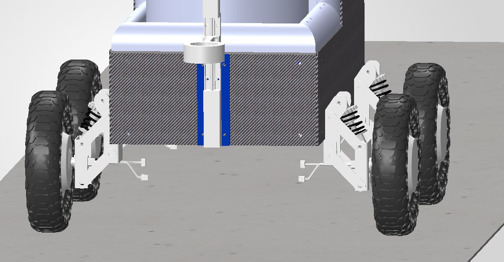

Mechanical Subsystem. Chassis CAD. Suspension Kinematics. Powertrain Sizing.
SolidWorks 2024 modeling, FEA modal vibration simulations, ground clearance airflow, motor torque sizing, and suspension system kinematics.
Mechanical Subsystem Engineers
• Zacarias Ng (A0306899H): Chassis Structural Design, FEA, DFM & Fabrication
• Asuka (A0308285Y): FOD Pickup Mechanism & Suspension Systems
• Hilbert Soh (A0308263H): Powertrain Motor Calculations & Steering Kinematic Analysis
The UGV chassis serves as the structural foundation housing high-payload batteries, central suction airflow ducts, delicate LiDAR sensors, and 4WD powertrain assemblies.
Chassis Design Iterations
Conceptual Monocoque Box
[To be filled]
Modular Aluminum Extrusion Frame
[To be filled]
Hybrid Modular Chassis with Low CG
[To be filled]
Material Selection Justification
[To be filled]
Physical CAD Realization & Component Packaging
[To be filled]
[To be filled]
[To be filled]
[To be filled]
[To be filled]
The suspension subsystem is designed for the 65 kg autonomous runway FOD patrol UGV. Its requirements include a 20 mm shock stroke, 40%-50% static sag to centre the piston, 10-15 km/h operating speed, and a 16.25 kg corner mass budget. The documentation explains how suspension compliance protects the camera, LiDAR, and IMU from vibration, preserves the vacuum intake seal, maintains tyre traction during differential skid steering, and dissipates impact energy. It develops a first-principles mass-spring-damper model, transfer function, natural and damped frequency calculations, motion-ratio and wheel-rate relationships, and a spring-rate comparison. The 100 lbs/in spring is selected for approximately 9.397 mm static sag, while the double-wishbone architecture is selected over trailing-arm and MacPherson-strut alternatives. Read Asuka's Suspension Documentation →

The FOD pickup subsystem addresses the limitations of manual runway FOD walks, sweepers, magnetic bars, and independent blowers by combining a ground-sealing intake interface with contained vacuum extraction. The design target covers ferrous and non-ferrous debris from approximately 4-20 cm and 4-300 g, including small fasteners through to a 300 g bird carcass. The documentation compares grippers, vacuum, magnetic bars, friction mats, and sweepers, then derives pickup velocity, duct flow rate, pressure losses, and estimated motor power for 25 g and 300 g cases. It also records two design iterations, side-entry and top-down testing, the observed blockage caused by corrugated hose, and the improved pickup achieved through a temporary nozzle seal and velocity surge. Read Asuka's FOD Pickup Documentation →
To achieve the operational target of $\ge 10\text{ km/h}$ while climbing runway access ramps and handling full payload mass, powertrain parameters were calculated:
1. Kinematic Velocity & RPM Calculation
Target Velocity: $v = 10\text{ km/h} \approx 2.78\text{ m/s}$
Drive Wheel Radius: $r = 0.10\text{ m}$ ($200\text{ mm}$ all-terrain tire)
Angular Velocity: $\omega = \frac{v}{r} = \frac{2.78}{0.10} = 27.8\text{ rad/s}$
Required Wheel Output Speed = $\approx 265\text{ RPM}$
2. Tractive Force & Torque Budget
Vehicle Gross Mass: $M = 40\text{ kg}$
Ramp Incline Angle: $\theta = 15^\circ$ ($F_{\text{grade}} = M g \sin 15^\circ \approx 101.5\text{ N}$)
Rolling Resistance + Acceleration: $F_{\text{rolling}} + F_{\text{acc}} \approx 28.5\text{ N}$
Total Tractive Force: $F_{\text{total}} \approx 130\text{ N}$
Total Torque $\tau = F \times r = 130 \times 0.10 = 13.0\text{ N}\cdot\text{m}$
3. Selected Motor & Driver Hardware
Hub Motors: Dual ZLLG80ASM25 0-HT V2.0 8-inch high-torque direct-drive hub motors (zero gearbox backlash, >88% efficiency).
Servo Driver: ZLAC8015D V4.2 dual-channel DC brushless servo driver via CAN bus.
Bus Voltage: 48V LiFePO4 bus (up to 800W peak mechanical output).
Suspension & Mounts: Coilover suspension shock absorbers, PETG CF structural brackets, and TPU 98A dampeners.
The steering architecture was evaluated to balance rapid runway traversal ($\ge 10\text{ km/h}$) with precise low-speed positioning of the vacuum intake directly over detected FOD coordinates. Three candidate drivetrains were shortlisted and benchmarked across turning envelope, tarmac traction, outdoor debris tolerance, mechanical reliability, sensor platform stability, and ROS 2 Nav2 compatibility: 4WD Differential / Skid Steering, Ackermann Steering, and Mecanum Wheel Omnidirectional Drive.
| Steering Architecture | Kinematic Envelope | Speed Requirement ($\ge 10\text{ km/h}$) | Runway Traction & Debris Immunity | Mechanical Complexity | Selection Decision |
|---|---|---|---|---|---|
| 4WD Differential / Skid-Steer | Zero Radius ($R = 0\text{ m}$, in-place pivot) | Met ($v \approx 10\text{--}12\text{ km/h}$ at nominal RPM) | High (Pneumatic rubber on asphalt, $\mu \approx 0.85$) | High (Direct-drive hubs, zero tie-rod play) | SELECTED |
| Ackermann Steering | Constrained ($R_{\text{kinematic}} \ge 0.79\text{ m}$, swept $\ge 1.2\text{ m}$) | Met ($v \ge 15\text{ km/h}$, pure rolling) | High (Pure rolling, minimal tire scrub) | Low (Linkages, kingpins, steering servo) | NOT SELECTED |
| Mecanum Drive | Zero Radius ($R = 0\text{ m}$, omnidirectional) | Unmet / High Losses ($v < 6\text{ km/h}$, roller slip) | Poor (Exposed rollers, $\mu_{\text{eff}} \approx 0.35\text{--}0.45$) | Moderate (4 motors, complex multi-roller wheels) | NOT SELECTED |
4WD Differential / Skid Steering was selected because it enables true zero-radius in-place rotation ($R=0$) to eliminate multi-point repositioning over detected FOD, delivers robust rubber-on-asphalt traction ($\mu \approx 0.85$) for $15^\circ$ drainage slopes, eliminates delicate steering linkages prone to vibration fatigue, and directly maps body-velocity commands $(v_x, \omega_z)$ to ROS 2 Nav2. The accepted trade-off of lateral tire scrub during high-friction pivots is mitigated through calibrated effective track width ($W_{\text{eff}}$) parameterization and IMU/LiDAR EKF sensor fusion.
- Gillespie, T. D. (1992). Fundamentals of Vehicle Dynamics. SAE International. [DOI: 10.4271/R-114]
- El-Sayed, A. F. (2022). Foreign Object Debris and Damage in Aviation. Academic Press / Elsevier.
- Lamerton Simulation Ltd. Kinematic Modeling and Simulation of MacPherson Strut Suspensions.
- Kojima, M. (2012). The Ultimate Guide to Suspension and Handling: Roll Center Geometry. MotoIQ.
- Siegwart, R., Nourbakhsh, I. R., & Scaramuzza, D. (2011). Introduction to Autonomous Mobile Robots (2nd ed.). MIT Press. [DOI: 10.7551/mitpress/8971.001.0001]
- NUS CDE4301 Project Group. (2026). FOD Vacuum Motor Design & Fluid Dynamics Calculations. Technical Report.
- Wikipedia. Scrub Radius and Steering Axis Geometry.
- Rao, S. S. (2017). Mechanical Vibrations (6th ed.). Pearson.
- Auto-Z. Roll Centre and Roll Moment: How To Adjust and Tune Suspension Geometry.